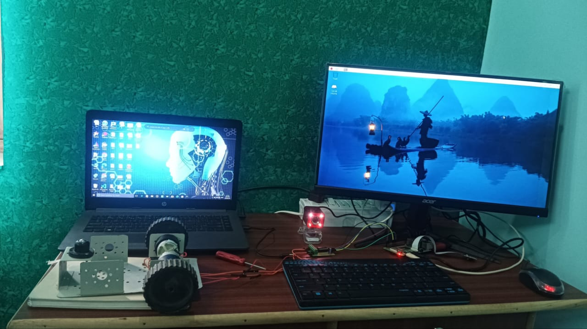
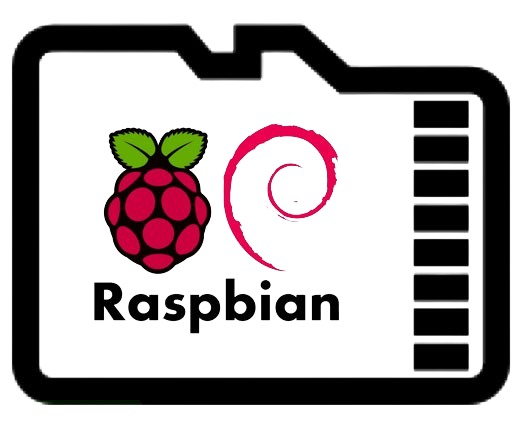
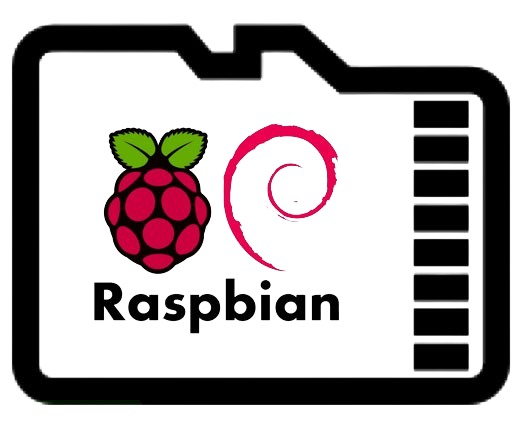

1. Simultaneous Localization and Mapping(SLAM)
Designing a robotic system to track lines and generate environment maps using SLAM. Equipped with sensors, it follows predefined paths while mapping surroundings for autonomous navigation.

Hye,I am student of B.Tech(CSE) at the University of Petroleum and Energy Studies
(UPES) in Dehradun. My passion lies in the fascinating world of software development,
particularly within the realm of robotics. With a strong foundation in computer science,
I have had the privilege of working with esteemed companies such as Flipkart and Correct
Step Consultancy, where I have contributed my skills as a software developer.
In addition to my academic and professional pursuits, I believe in the importance of giving back to society.
This belief has led me to engage in various internships, including volunteering for NGOs as part of social internships.
These experiences have not only allowed me to apply my technical knowledge in real-world settings but have also
instilled in me a sense of social responsibility and empathy.
My journey is a testament to my dedication to continuous learning and growth. With each opportunity, whether it be
in academia, the professional sphere, or community service, I strive to broaden my horizons and make meaningful
contributions to the world around me. As I continue to navigate my path, I am excited to explore new challenges,
expand my skill set, and ultimately make a positive impact in the field of robotics and beyond.
I'm proficient with various applications, utilizing them to accomplish tasks effectively. My experience spans across a diverse range of technologies, enabling me to adapt and excel in different environments.
My adaptability across operating systems extends beyond basic usage, facilitating efficient project execution and organizational goal attainment. Familiar platforms include:


 

I excel in numerous programming languages, leveraging their unique features to tackle diverse challenges and expand my expertise. Some of my proficient languages include:


These are some of the projects that I've worked upon and are currently indulged in. I'll be updating everytime I try something new, stay updated.
Designing a robotic system to track lines and generate environment maps using SLAM. Equipped with sensors, it follows predefined paths while mapping surroundings for autonomous navigation.
The Plant Disease Detection Rover addresses agricultural challenges by automating disease detection, potentially revolutionizing crop management and enhancing food security.
The competition focuses on automating package singulation in e-commerce warehouses, aiming to detect, pick, and drop individual packages while ensuring correct orientation, promoting innovation in prototype development.
Crafted a personalized portfolio showcasing skills and achievements. Ready to impress and connect!
Feel free to reach out if you're looking to hire, just want to connect or see if we can build something amazing together.
Email:-singhnirmalkr5@gmail.com